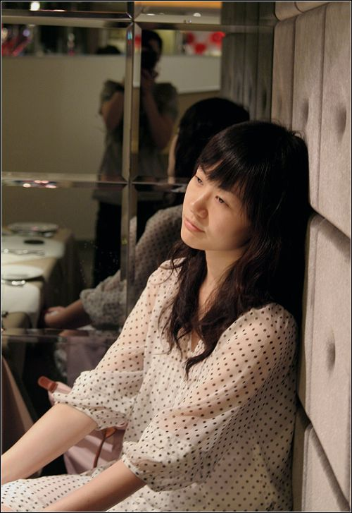

差.......距 @ Jun 04, 2009
特别喜欢法国时尚摄影师Jean-Baptiste Mondino的作品，不对比不知道，一对比吓一跳。好摄影总能打动人，这时候我会特别兴奋，想马上拿起相机...摄影初期是不是和写作一样也存在模仿的规律？喜欢口味重的摄影，通过观看Mondino的作品，感悟出即使色彩浓郁，画面也可以表现出层次感。

心里怯怯地地问自己：这一张可以放在大师作品下面吧？
好象在上传之后，画面质量总会损失一些。

特别喜欢法国时尚摄影师Jean-Baptiste Mondino的作品，不对比不知道，一对比吓一跳。好摄影总能打动人，这时候我会特别兴奋，想马上拿起相机...摄影初期是不是和写作一样也存在模仿的规律？喜欢口味重的摄影，通过观看Mondino的作品，感悟出即使色彩浓郁，画面也可以表现出层次感。
心里怯怯地地问自己：这一张可以放在大师作品下面吧？
好象在上传之后，画面质量总会损失一些。

9 Responses to “差.......距”
2009-06-04
我觉得在任何一个领域中，越进步，就越宽广，喜欢的也会越来越多。
2009-06-04
摄影真是个让人上瘾的活儿啊，越入门越着迷，越专业越享受。呵呵，以后咱专业了也请专业的模特儿！
2009-06-05
Sherry即使穿上淑女裙，还是看得出调皮可爱的样子。
2009-06-05
不错，人物的神抓住了
2009-06-05
我恐怕只有拿我女儿当固定模特了，但小姑娘一点都不配合。。。
2009-06-05
大师的用光真好，对比强烈，内容生动，富有想象的空间。学习。。
2009-06-05
你的不比他的差，加油！
2009-06-05
茶，
你拍得不错。
但是比起大师的作品，
我觉得差了那么一点韵味。
比如第一张的凌乱美，
第二张的逆光中的渴望，
第三张Sherry的样子调皮有余，
慵懒不足，
最糟糕的是那个玻璃幕墙上的金属隔断，
或者，在餐桌上点一支蜡烛，
会调和这种画面和色泽的冲突。
随便乱说，
其实你拍得很好。
2009-06-16
上面两张貌似也是摆拍的，布景，人物，呵呵，差距不是一点点啊
Leave A Reply
存档只读，评论已关闭。